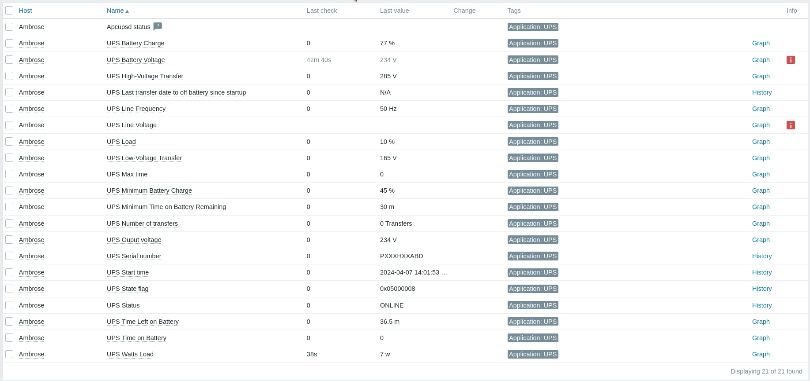

Monitoring my Eaton Ellipse PRO 650 on Zabbix with Zabbix agent and Apcupsd.
This is how to monitor an Eaton Ellipse PRO 650 with Zabbix using Zabbix agent and Apcupsd.
Required
- Have
zabbix-agent2installed on your node and you will need a Zabbix server somewhere. - And also install
jq. - And of course you will need a configured
apcupsd, Ubuntu has a good tutorial for that.
Check everyting is setup
$ apcupsd --version
apcupsd 3.14.14 (31 May 2016) debian
$ jq --version
jq-1.6
$ zabbix_agent2 --version
zabbix_agent2 (Zabbix) 6.4.13
Config files
Create /etc/zabbix/zabbix_agent2.d/userparameter_apcupsd.conf
With:
UserParameter=apcupsd,apcaccess | jq -s -R -f /etc/zabbix/zabbix_agent2.d/apcupsd_filter.jq
Create /etc/zabbix/zabbix_agent2.d/apcupsd_filter.jq
# See https://linux.die.net/man/8/apcaccess
# Newer versions of jq will have `trim` and some of this mess can be cleaned up
# See: https://github.com/jqlang/jq/issues/3078#issuecomment-2018999435
[
split("\n")[] # transform input into array
| split(": ") # where first element has key names
| select(length==2) # check we have a key and a value
| (
# If the value contains some string or if the key is NUMXFERS
if (.[1] | test("Seconds|Volts|Percent|Minutes|Hz"; "x")) or (.[0] | test("NUMXFERS"; "x"))
then
{(.[0]|split(" ")[0]):.[1]|split(" ")[0]|tonumber}
else
{(.[0]|split(" ")[0]): .[1]|rtrimstr(" ")|rtrimstr(" ")}
end
)
]
| add
Check that it works
Run:
apcaccess | jq -s -R -f /etc/zabbix/zabbix_agent2.d/apcupsd_filter.jq
It outputs:
See: man apcaccess for the keys descriptions.
{
"APC": "001,029,0691",
"DATE": "2024-04-07 16:38:34 +0200",
"HOSTNAME": "my-machine",
"VERSION": "3.14.14 (31 May 2016) debian",
"UPSNAME": "ET_MYUPS",
"CABLE": "USB Cable",
"DRIVER": "USB UPS Driver",
"UPSMODE": "Stand Alone",
"STARTTIME": "2024-04-07 14:01:53 +0200",
"MODEL": "Ellipse PRO",
"STATUS": "ONLINE",
"LOADPCT": 10,
"BCHARGE": 72,
"TIMELEFT": 34.1,
"MBATTCHG": 45,
"MINTIMEL": 30,
"MAXTIME": 0,
"OUTPUTV": 233,
"DWAKE": -1,
"LOTRANS": 165,
"HITRANS": 285,
"ALARMDEL": 30,
"LINEFREQ": 50,
"NUMXFERS": 0,
"TONBATT": 0,
"CUMONBATT": 0,
"XOFFBATT": "N/A",
"STATFLAG": "0x05000008",
"SERIALNO": "PXXXHXXABD",
"END": "2024-04-07 16:39:25 +0200"
}
Zabbix setup
Download the template: Zabbix-UPS-Apcupsd.yaml
Import the template in "Data Collection" > "Templates".
Then go to your "Host" and link the template in the "Templates" section.
Latest data
Note: some items do not exist on my UPS, they may exist on yours. Feel free to add some missing keys and contact me to update the template.

Some notes
I was originally using cavazquez's Zabbix template.